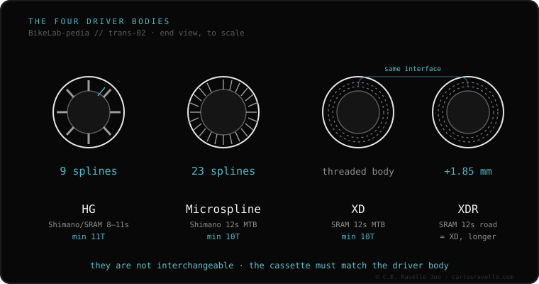

The three modern freehubs don't interchange, and picking wrong is the #1 buying mistake when changing cassettes. HG (Shimano, 9 splines) takes 8-11sp cassettes with an 11T minimum cog: universal and cheap. Microspline (Shimano, 23 splines) is for its 12-speed MTB cassettes with a 10T cog. XD/XDR (SRAM, threaded) is for SRAM cassettes with a 10T cog (XD on MTB, XDR on road). Simple rule: a 10-tooth cog forces Microspline (if Shimano) or XD (if SRAM); an 11T fits HG.
Before buying a new cassette, this is the only question that matters: which freehub does your wheel have? Solve it here in 30 seconds.
The question isn't «how many speeds?», but «which brand and what minimum cog?». If your smallest cog is 10 teeth and it's Shimano, you need Microspline; if SRAM, XD (or XDR on road). If the minimum is 11T, it's almost certainly HG. Always confirm your wheel's freehub before buying the cassette: changing it is sometimes just swapping the freehub body.

HG and Microspline are both Shimano but do NOT interchange. Microspline (Shimano) and XD (SRAM) are both 12-speed MTB but use different geometries. The only «easy» migration is replacing the freehub body if your hub allows it (DT Swiss, Hope, Mavic…).
If you're unsure which cassette, freehub or chain fits your bike, send us the case. Real diagnosis, nothing to sell you. Message us on WhatsApp
Check the cassette brand and its smallest cog. 10T Shimano → Microspline. 10T SRAM → XD (MTB) or XDR (road). 11T → HG.
Yes, if your hub lets you change the freehub body. Many quality hubs sell it separately; sealed generic hubs don't.
None is «best»: they depend on your groupset. HG is cheapest and universal; Microspline and XD exist to allow modern systems' 10T cog.